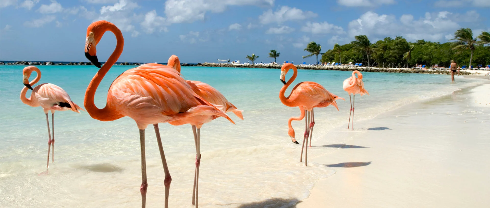

DESTINO
Corea del Sur
“Conocer Corea con Viajes Parman fue completamente diferente. Aprendí más en 10 días que en años viendo documentales. Lo volvería a hacer sin dudar.”— Valeria R. (Chile)
“No es solo una guía, es una experiencia cultural profunda. Me sentí bien acompañada y libre a la vez.” — Santi C. (España)
Dubái
“Lo que más me sorprendió de Dubái fue lo que no me esperaba: su lado tradicional. Los zocos y el desierto fueron un contraste impresionante con el lujo de la ciudad.”— Andrea P. (Argentina)
“Un destino único. Me encantó cómo combinan lo antiguo y lo nuevo. Además, todo fue organizado a la perfección, con guías increíbles y actividades emocionantes.” — Felipe J. (Chile)

Aruba
“¡Aruba es un paraíso! Gracias a viajes.parman por organizar todo y hacernos sentir como en casa en la isla.” — Martina L. (Argentina)
“Un viaje perfecto para desconectar. Las playas son de otro mundo, y las actividades que nos ofrecieron fueron increíbles.” — Ricardo G. (España)

TIPO DE VIAJE
Viaje de Negocios
“Excelente experiencia. Todo estuvo perfectamente organizado y aproveché mi tiempo al máximo.” — Juan M. (México)
“Viajar por trabajo siempre fue una carga para mí, pero con viajes.parman, fue todo más fluido. El soporte durante todo el viaje fue clave para lograr mis objetivos empresariales.” — Marta R. (España)
Emprendimiento Gobal
“Gracias a Viajes Parman, pude explorar mercados en Asia y establecer conexiones clave para mi negocio.” — Carlos T. (Argentina)
“El apoyo y los contactos que me proporcionaron fueron esenciales para mi expansión en Europa. Pude presentar mi proyecto a inversores y obtener la visibilidad que necesitaba.” — Laura V. (Chile)
Work and Travel
“Fue una experiencia increíble. Trabajé en un resort en Australia y aprendí mucho mientras viajaba.” — Lucía G. (México)
“Mi experiencia trabajando en Nueva Zelanda cambió mi vida. No solo aprendí nuevas habilidades, sino que viví una aventura increíble y conocí gente de todo el mundo. Todo estuvo muy bien organizado.” — Tomás R. (Argentina)
Aventura
“¡Un viaje épico! Hicimos un trekking por las montañas de Corea del Sur y fue una de las mejores experiencias de mi vida. El equipo de viajes.parman se encargó de todo, desde los alojamientos hasta las rutas más espectaculares. Volvería sin pensarlo.” — Carla M. (Argentina)
“Nunca imaginé que un viaje de aventura pudiera ser tan completo. Rafting en el desierto de Dubái, caminatas por la arena dorada, y la sensación de estar tan cerca de la naturaleza. Un agradecimiento especial a nuestros guías, que hicieron que todo fuera mucho más divertido.” — José L. (México)